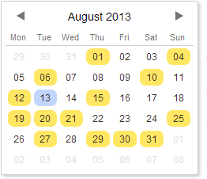
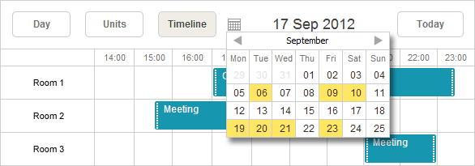
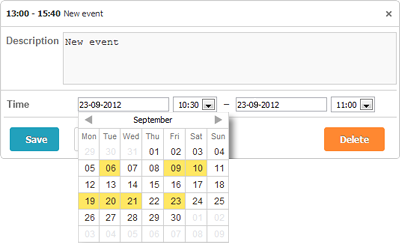
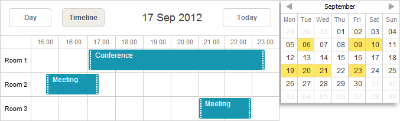
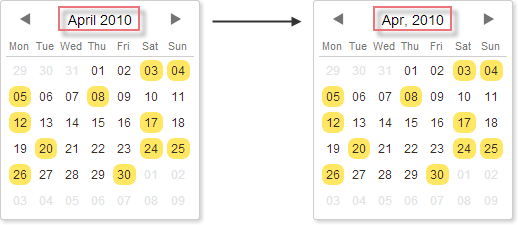
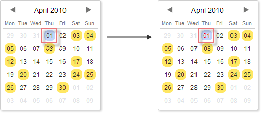
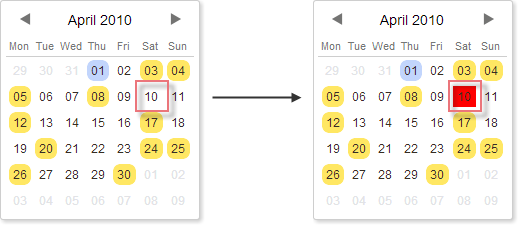

Mini calendar (date picker) is a special extension that provides an ability to render a small month view in an HTML container on a page.

Related sample: Mini calendar without the scheduler
To use the mini calendar in an app, include the ext/dhtmlxscheduler_minical.js file on the page.
To place the mini calendar (date picker) into the header of the scheduler (as shown in the image below), follow these steps:

<script src='/ext/dhtmlxscheduler_minical.js' type="text/javascript"></script>
<div class="dhx_cal_navline">
...
<div class="dhx_cal_date"></div>
<div class="dhx_minical_icon" id="dhx_minical_icon"
onclick="show_minical()"> </div>
</div>
function show_minical(){
if (scheduler.isCalendarVisible()){
scheduler.destroyCalendar();
} else {
scheduler.renderCalendar({
position:"dhx_minical_icon",
date:scheduler._date,
navigation:true,
handler:function(date,calendar){
scheduler.setCurrentView(date);
scheduler.destroyCalendar()
}
});
}
}
Related sample: Mini calendar in the scheduler header
The mini calendar (date picker) can be used in the lightbox for "start" and "end" dates selection.

To place the mini calendar in the lightbox, follow these steps:
<script src='/ext/dhtmlxscheduler_minical.js' type="text/javascript"></script>
//default lightbox definition
scheduler.config.lightbox.sections=[
{name:"description", height:200, map_to:"text", type:"textarea", focus:true},
{name:"time", height:72, type:"time", map_to:"auto"}
];
//change type:"time" -> type:"calendar_time"
scheduler.config.lightbox.sections = [
{name:"description", height:200, map_to:"text", type:"textarea", focus:true},
{name:"time", height:72, type:"calendar_time", map_to:"auto" }
];
Related sample: Mini calendar in the lightbox
The mini calendar (date picker) can reside at any place on the page.

To place the mini calendar in some HTML container outside the scheduler, follow these steps:
<script src='/ext/dhtmlxscheduler_minical.js' type="text/javascript"></script>
<div id="scheduler_here" class="dhx_cal_container" ...>
...
</div>
<div style='float: left; padding:10px;'>
<div id="cal_here" style='width:250px;'></div>
</div>
var calendar = scheduler.renderCalendar({
container:"cal_here",
navigation:true,
handler:function(date){
scheduler.setCurrentView(date, scheduler._mode);
}
});
Related sample: Mini calendar outside the scheduler
To customize the format of dates presented in the mini calendar (date picker), you can use a number of templates listed in the article Mini Calendar Templates.
scheduler.templates.calendar_month = scheduler.date.date_to_str("%M, %Y");
scheduler.init('scheduler_here',new Date(2019,2,1),"day");
...
var calendar = scheduler.renderCalendar({..});

To customize the look of days in the mini calendar (date picker), you can redefine the following CSS classes:
| CSS class | Applied to |
|---|---|
| .dhx_cal_container.dhx_mini_calendar .dhx_month_head | a day's cell |
| .dhx_cal_container.dhx_mini_calendar .dhx_month_head.dhx_year_event | a day's cell with the assigned event(s) |
| .dhx_cal_container.dhx_mini_calendar .dhx_now .dhx_month_head | a day's cell with the current date |
| .dhx_cal_container.dhx_mini_calendar .dhx_calendar_click | a day's cell with the currently active date |
<style>
.dhx_cal_container.dhx_mini_calendar .dhx_calendar_click{
color:red;
}
</style>
<script>
var calendar = scheduler.renderCalendar({...});
</script>

To assign a custom CSS class to a day, you can use the markCalendar method:
<style>
.my_style{
background: red !important;
}
</style>
<script>
var calendar = scheduler.renderCalendar({...});
...
scheduler.markCalendar(calendar, new Date(2019,3,1), "my_style");
</script>

| destroyCalendar | destroys the previously created mini-calendar |
| isCalendarVisible | checks whether the calendar is currently opened in the scheduler |
| linkCalendar | 'says' to change the active date in the mini calendar each time the active date in the scheduler is changed |
| markCalendar | applies a CSS class to the specified date |
| renderCalendar | creates a mini calendar |
| unmarkCalendar | removes a CSS class from the specified date |
| updateCalendar | displays the specified date in the mini calendar |